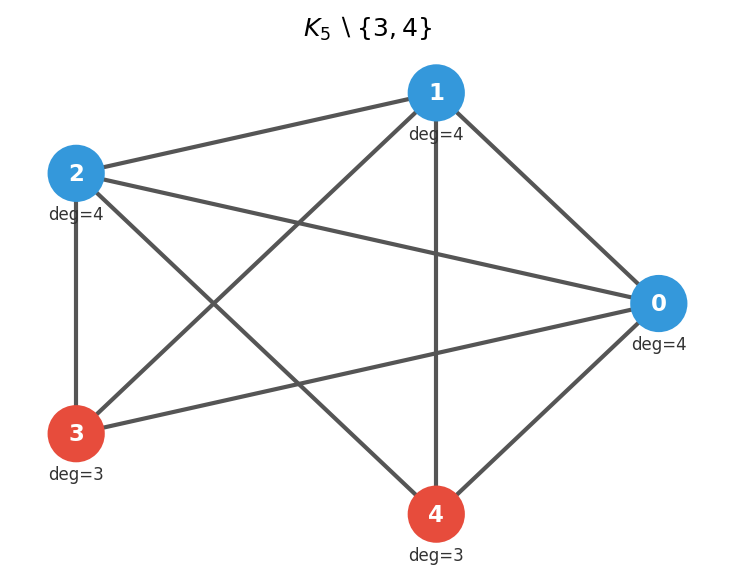
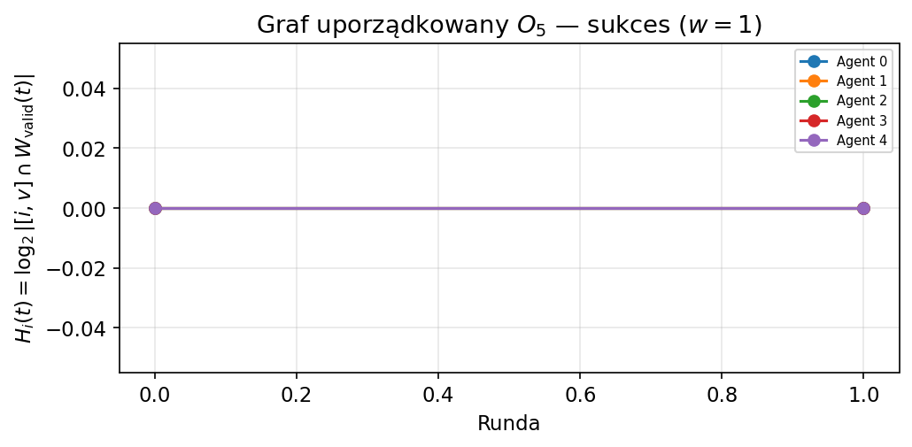
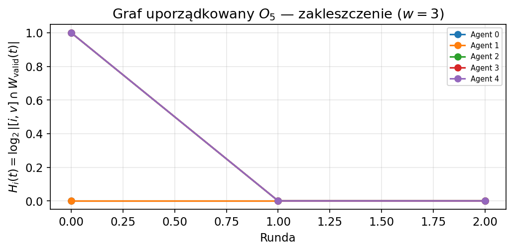
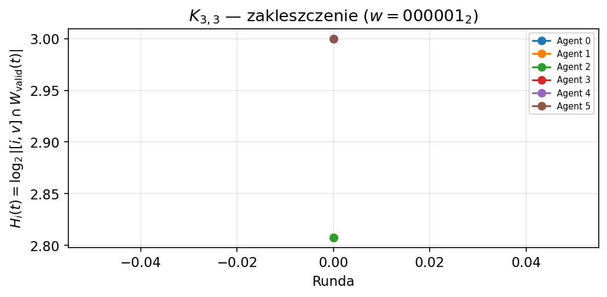
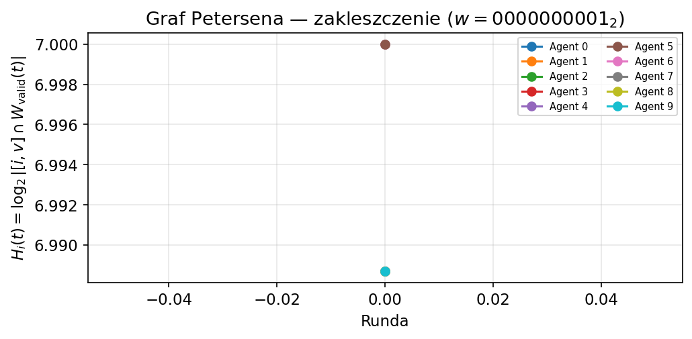
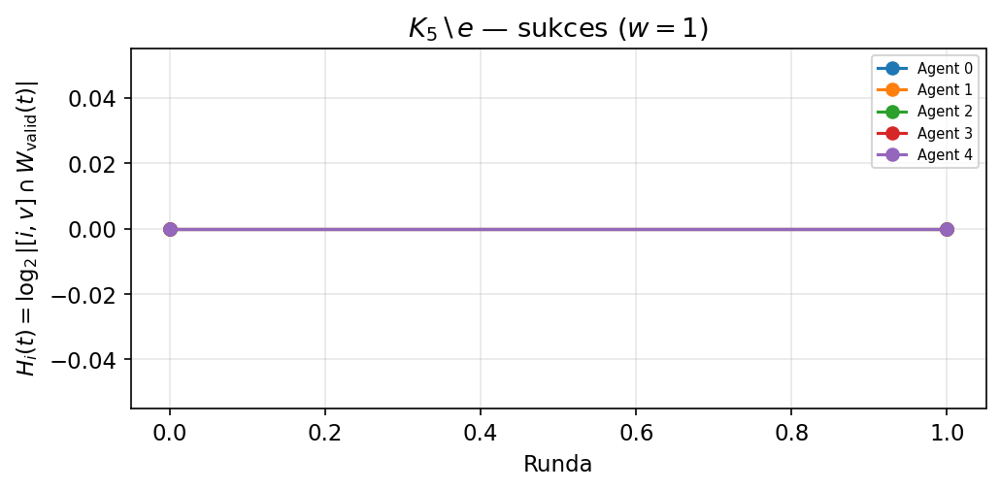
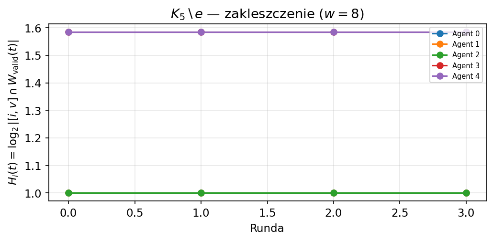
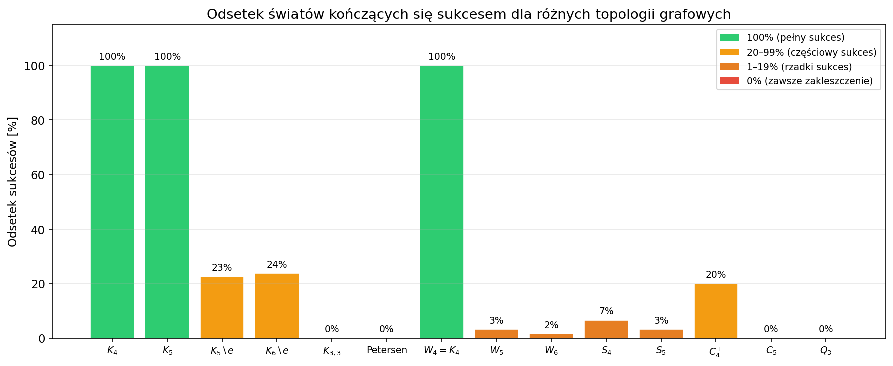

Gra w Kapelusze na Grafach
Analiza Epistemiczna, Implementacja i Dowody
Kacper Piotrowski & Igor Ptak
Gry Kombinatoryczne · MINI · 2026
Intuicja: Zagadka Kapeluszy
- $N$ agentów stoi w wierzchołkach grafu. Każdy nosi kapelusz — czerwony lub biały.
- Agent widzi kapelusze wyłącznie swoich sąsiadów w grafie — nie widzi własnego.
- Wspólna wiedza: co najmniej jeden kapelusz jest czerwony (świat $w = 0$ wykluczony).
- Cel: wszyscy agenci muszą bezbłędnie odgadnąć własny kolor.
- Mechanizm: iteracyjne rundy milczenia i publicznych oznajmień — wiedza rośnie zgodnie z DEL.
Formalizacja: Model Kripkego
- Świat $w \in \{1,\ldots,2^n{-}1\}$: maska bitowa stanu kapeluszy wszystkich agentów.
- Obserwacja agenta $i$: $$\mathrm{view}_i(w) = w \;\&\; \mathrm{mask}_i, \qquad \mathrm{mask}_i = \bigoplus_{j \in N(i)} 2^j$$
- Klasa równoważności — światy nierozróżnialne dla agenta $i$: $$[i,v] = \{w \in \Omega : \mathrm{view}_i(w) = v\}$$
- Agent może odgadnąć swój kolor wtedy i tylko wtedy, gdy klasa $[i,v] \cap \Omega_\mathrm{valid}$ jest jednorodna (jeden kolor bitu $i$).
Relacja $\sim_i$ jest relacją równoważności → system logiki epistemicznej S5 (T, 4, 5).
Protokół Publicznych Oznajmień (DEL)
- Runda odgadywania: agent z jednorodną klasą deklaruje swój kolor publicznie. Eliminuje niespójne światy.
- Runda ciszy ($\sigma_t$): nikt nie może odgadnąć. Samo milczenie jest informacją: $$\Omega_{t+1} = \{ \omega \in \Omega_t \mid \Omega_t,\, \omega \models \sigma_t \}$$ Eliminuje światy, w których ktoś mógłby mówić.
Wszyscy odgadują w skończonej liczbie rund
Punkt stały — cisza nie eliminuje żadnego świata
Graf Pełny $K_n$ — Zawsze Sukces
- Każdy agent widzi wszystkich $n-1$ pozostałych: deg$(i) = n-1$.
- Klasy 2-elementowe — jeden wolny bit (własny).
- Rundy ciszy odliczają kolejne warstwy popcount: $$\Omega_j = \{w : \mathrm{popcount}(w) > j\}$$
- Formuła: $$\mathrm{rounds}(K_n, w) = \min(k,\, n{-}1)$$ gdzie $k = \mathrm{popcount}(w)$.
Analog Zagadki Zabrudzonych Dzieci (Fagin et al., 1995). Jedyna topologia z 100% sukcesem.

Zakleszczenie: Cykl $C_n$ i Ścieżka $P_n$
Cykl $C_4$

Ścieżka $P_4$

Dlaczego? Każdy agent widzi ≤ 2 sąsiadów, ma ≥ 2 wolne bity (własny + bity poza sąsiedztwem). Klasy zawsze niejednorodne → punkt stały operatora ciszy. Wyjątek: $C_3 = K_3$.
Asymetria Ról: Gwiazda $S_n$ i Koło $W_n$
Gwiazda $S_n$ (centrum: deg $= n-1$)

Sukces tylko gdy $w=1$: centrum widzi same białe liście → klasa = singleton → odgaduje natychmiast.
Koło $W_5$ (centrum + cykl liści)

Sukces tylko gdy $w = 2^{n-1}$ (samo centrum czerwone). Liście tworzą cykl $C_{n-1}$ — epistemicznie zablokowany.
„Pasożytnictwo informacyjne": liście czekają na centrum, centrum czeka na pełną informację.
Częściowy Sukces: $K_n \setminus e$ i Graf $O_n$
$K_5 \setminus \{3,4\}$ (usunięta krawędź)

Sukces wtw. obaj „brakujący" wierzchołki mają białe kapelusze. Asymptotycznie ≈ 25% światów. Przykład: 3 z 31 dla $K_5$.
Graf Uporządkowany $O_n$ (hierarchia widoczności)
Wierzchołek $k$ widzi $\{k{+}1,\ldots,n{-}1\}$ — im wyższy indeks, tym mniejszy widok. Wierzchołek $n-1$ nie widzi nikogo.

Sukces ($w=1$)
Zakleszczenie ($w=3$)Sukces tylko gdy $w=1$: wyłącznie wierzchołek 0 (najwyższa ranga) czerwony. Analog klasycznej zagadki Berlekampa (1964).
Grafy Dwudzielne $K_{m,n}$ i Graf Petersena
$K_{3,3}$ — Zagadka Trzech Mediów

Każdy wierzchołek widzi wyłącznie drugą partycję: ≥ 2 wolne bity (własny + współpartycja) → zawsze zakleszczenie dla $m,n \ge 2$.
Związek z tw. Kuratowskiego: $K_{3,3}$ jest nieplanarny i epistemicznie zablokowany.
Graf Petersena (3-regularny, 10 wierzchołków)

6 wolnych bitów na agenta → $2^6 = 64$ światy w każdej klasie. Wyczerpująca analiza: 0 / 1023 sukcesów.
„Król kontrprzykładów" teorii grafów jest też epistemicznie niemożliwy.
Entropia Epistemiczna
Miara niepewności agenta $i$ w rundzie $t$:
$$H_i(t) = \log_2 \bigl|[i,\, \mathrm{view}_i(w)] \cap \Omega_\mathrm{valid}(t)\bigr|$$
Sukces: $H_i$ spada do 0 kaskadowo

$K_5 \setminus e$, $k=3$ — trzej czerwoni agenci (0,1,2) odgadują kaskadowo. Entropia węzłów 3,4 spada po ich odgadnięciu.
Zakleszczenie: $H_i$ = const

$K_5 \setminus e$, węzeł 3 czerwony — punkt stały. Entropia „zamrożona".
Sukces $\iff$ $\exists\, i, t:\, H_i(t) = 0$ (inicjuje kaskadę) · Zakleszczenie $\iff$ $H_i(t) = \mathrm{const}$ dla wszystkich $i, t$
Kryterium Gęstości i Porównanie

Musi istnieć agent $i$ z $\deg(i) = n-1$
lub kaskadowa struktura eliminacji.
| Topologia | Sukces |
|---|---|
| $K_n$ | 100% |
| $K_n \setminus e$ | ≈ 25% |
| $S_n$, $W_n$, $O_n$ | < 5% |
| $C_n$ ($n \ge 4$), $Q_k$, $K_{m,n}$, Petersen | 0% |
Wnioski Końcowe
Topologia to epistemologia.
- Gęstość gwarantuje sukces: tylko $K_n$ osiąga 100% — formuła $\min(k,n-1)$ opisuje kaskadowe budowanie wiedzy przez rundy ciszy.
- Symetria = paraliż: grafy regularne i symetryczne ($C_n$, $Q_k$, Petersen, $K_{m,n}$) zawsze kleszczą — żadna klasa równoważności nigdy nie jest jednorodna.
- Asymetria ról: wyłom tworzą agenci z deg$(i) = n-1$ ($S_n$, $W_n$) — ale sukces możliwy tylko w jednej konfiguracji.
- Entropia epistemiczna $H_i(t) = \log_2|{[i,v] \cap \Omega}|$ trafnie wizualizuje kaskadę wiedzy (sukces) i punkty stałe (zakleszczenie).